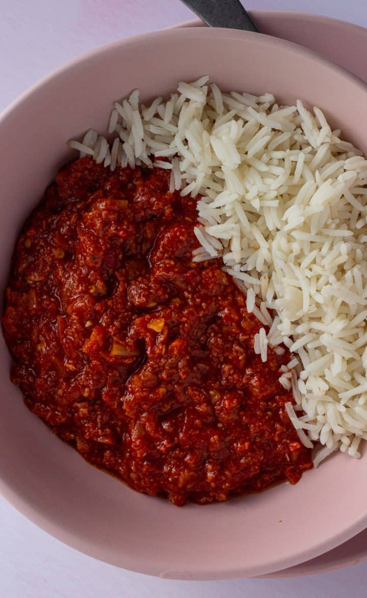

Corned Beef Stew Recipe

Corned Beef Stew
Corned Beef Stew is an african dish.It is a tomato based stew and is simple and easy to make, as long as you have the right ingredients.
The dish can take a couple hours to make, however, it is a dish that can be eaten over multiple weeks, if you freeze the stew after eating.
Ingredients
- Stewed Tomatos
- Canned Corned Beef
- Onions
- Ginger
- Oilve Oil
- Garlic Salt
- Curry Powder
Steps
- Blend stewed tomato, onion, and ginger together
- Add the bleneded vegetables to a pot
- Leave pot on the stove to boil
- In a separate pot, add three cans of corned beef
- Add corned beef to tomato pot
- Add garlic salt and curry powder to stew
- Let the the stew sit for five minutes, then serve